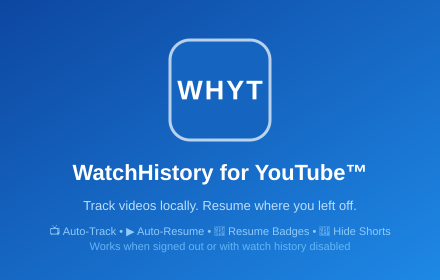
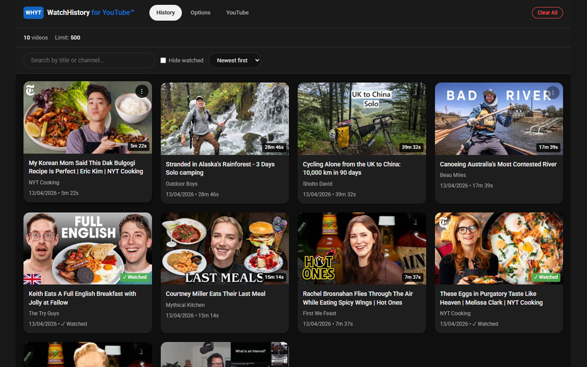
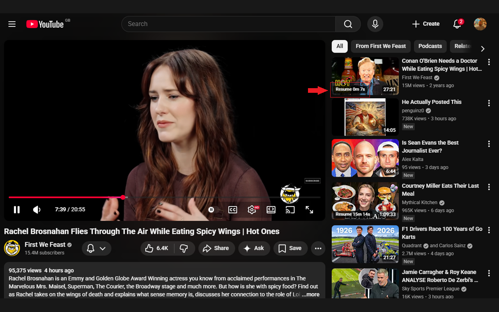
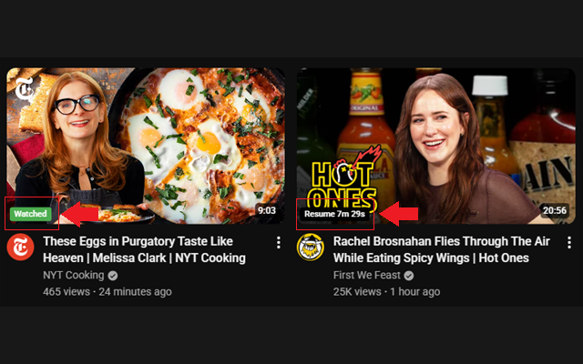
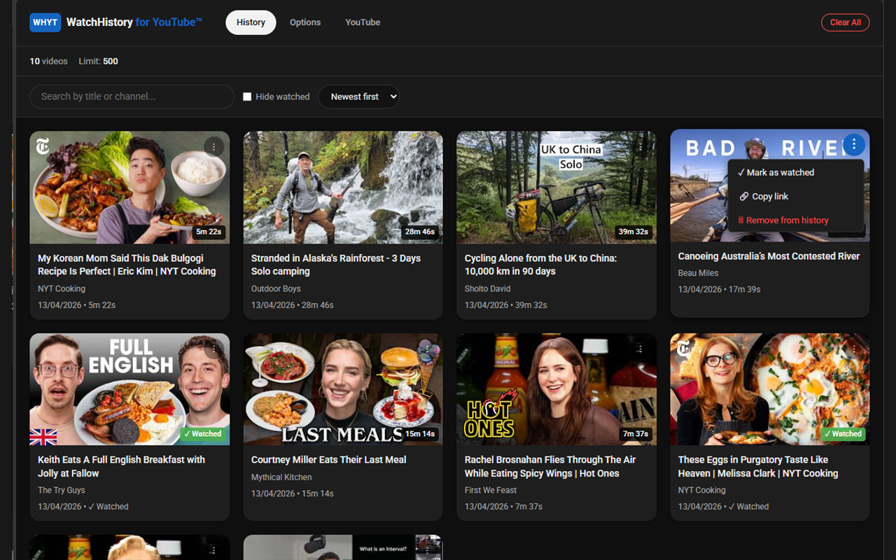
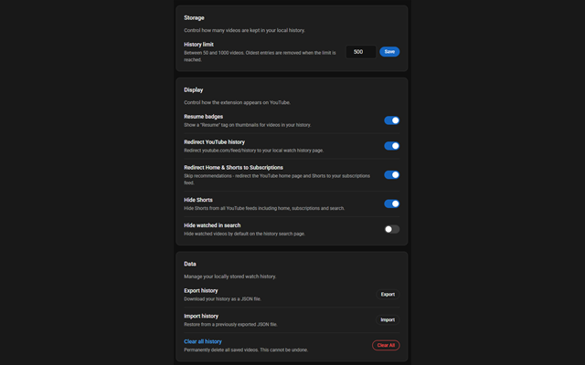

Track your YouTube history locally. Resume videos where you left off—with complete privacy and no cloud sync.
Works even when signed out or with YouTube watch history disabled.

Automatically save your entire watch history locally with high-performance IndexedDB storage. No arbitrary limits.
Pick up exactly where you left off. Every video is tracked to the second, resuming automatically on your next visit.
"Resume" and "Watched" tags appear directly on YouTube thumbnails. Easily toggleable in settings.
Clean up your YouTube experience by removing Shorts from home, subscriptions, and search feeds.
Find videos instantly by title or channel. Toggle "hide watched" to focus on what you haven't seen yet.
Videos are automatically tagged as "watched" when you reach 95% progress. No manual marking required.
Pause all tracking for the current session with a single click. Perfect for private browsing moments.
Back up and restore your watch history as JSON. Keep your data safe and portable.
All dashboards automatically adapt to your system's light or dark mode preference.
WatchHistory uses native browser storage technologies to ensure maximum privacy and performance. No cloud sync. No tracking. No external servers.
Video history archive with high-speed search performance and unlimited storage capacity.
User settings managed locally for fast, optimized access during page loads.
We don't track your usage, analyze your data, or use tracking pixels. Ever.
Fully auditable code on GitHub. See exactly what we do with your data.

Advanced search & filters

Resume badges on thumbnails

Watched & resume tags in-feed

Quick-action context menu

Fully configurable settings
Have feedback, suggestions, or found an issue? Reach out!